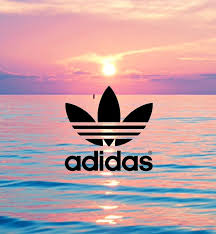

Apparel
Adidas sells a range of clothing items, varying from men's and women's t-shirts, jackets, hoodies, pants and leggings.
The first Adidas item of apparel was the Franz Beckenbauer tracksuit created in 1967. Adidas AG is the largest manufacturer of sports bras in Europe, and the second largest manufacturer in the world.
Sportswear
Association football
Autographed jersey of the Spain national football team that was manufactured by Adidas for the 2014 FIFA World Cup
One of the main focuses of Adidas has always been football kits, and the associated equipment. Adidas remains a major company in the global supply of team kits for international association football teams and clubs.
Adidas makes referee kits that are used in international competition and by many countries and leagues in the world. The company has been an innovator in the area of footwear for the sport, with notable examples including the 1979 release of the Copa Mundial moulded boot used for matches on firm dry pitches. It holds the accolade of the best selling boot of all time. The soft-ground equivalent was named World Cup and it too remains on the market.
FIFA, the world governing body of football, commissioned specially designed footballs for use in its own World Cup tournaments. The balls supplied for the 2006 World Cup, the "Teamgeist", were particular noteworthy for their ability to travel further than previous types when struck, leading to longer range goals. Goalkeepers were generally believed to be less comfortable with the design of the ball, claiming it was prone to move significantly and unpredictably in flight.[33]
Adidas Beau Jeu, which translates to Beautiful Game in English, was an officlal match ball of UEFA Euro 2016
Adidas introduced another new ball for the 2010 World Cup. The Jabulani ball was designed and developed by Loughborough University in conjunction with Bayern Munich. The Adidas Brazuca was the match ball of the 2014 World Cup.[34] Adidas named an official match ball of the UEFA Euro 2016 tournament Adidas Beau Jeu which translates to "The Beautiful Game" in English.[35]
Adidas is one of the official sponsors of the UEFA Champions League, and the Adidas Finale is the competition's official match ball. Along with the aforementioned Adidas Predator boot, Adidas manufactures the adiPure range of football boots. Adidas provides clothing and equipment for all teams in Major League Soccer.
In April 2013, Adidas and Opta Sports announced the introduction of a new football player type - the Engine. The Engine' is the archetypical box-to-box footballer who covers every blade of grass, seeks goal scoring chances, tracks down his opponent and displays relentless energy from the first minute to the final whistle.
Baseball
Adidas has also provided baseball equipment and sponsors numerous players of Major League Baseball and Nippon Professional Baseball in Japan.
Adidas Baseball hardgoods are licensed to Dick's Sporting Goods.
From 1997 to 2008, Adidas sponsored New York Yankees.
Basketball
Adidas' Superstar and Pro Model shoes, affectionately known as "shelltoes" for their stylized hard rubber toe box, were fueled by, among others, coaches such as UCLA's John Wooden. Adidas drew about even with Converse in basketball by the mid 1970s before both started to fall behind then-upstart Nike in the early 1980s. Subsequently, Adidas Superstar became very popular in the 1980s hip hop streetwear scene alongside Adidas's stripe-sided polyester suits.[citation needed]
Adidas is also the current outfitter of all 30 franchises in the National Basketball Association (replacing the Reebok brand after the merger; however, Adidas will be replaced by Nike as the official outfitter of the league after the 2016-17 season).
Cricket
Indian cricketer Sachin Tendulkar, batting with his personalized Adidas Cricket Bat
Adidas began manufacturing cricket footwear in the mid 1970s, with their initial target market being Australia. Their shoes were a radical departure from traditional leather cricket boots which had remained basically unchanged for decades, being lighter and more flexible but also offering less toe protection, so that it became not uncommon to see batsmen who had been struck by the ball on the foot hopping around in pain. Having continued to manufacture cricket footwear for many years, in 2006 the company finally entered the field of bat manufacture in 2008 and currently their bat range includes the Pellara, Incurza, Libro and M-Blaster models.
In the 1990s, Adidas signed the superstar Indian batsman Sachin Tendulkar and made shoes for him.From 2008 till his retirement, Adidas had sponsored the cricket bat used by Tendulkar. It created a new bat, 'Adidas MasterBlaster Elite', personalized for him.
In 2008, Adidas made a concerted move into English cricket market by sponsoring English batting star Kevin Pietersen after the cancellation of his lifetime deal with Woodworm, when they ran into financial difficulties. The following year they signed up fellow England player Ian Bell, Pakistan opening batsman Salman Butt and Indian Player Ravindra Jadeja.
In the Indian Premier League (IPL), Adidas sponsored the team Mumbai Indians from 2008 to 2014 and Delhi Daredevils from 2008 to 2013.They were the official sponsors of Pune Warriors India in 2011 and 2012, however the team was banned from IPL due to payment issues. In 2015 Season, Adidas sponsored Royal Challengers Bangalore.
Golf
"Adidas Golf" manufactures golf clothing, footwear, and accessories. Men's and women's equipment includes footwear, shirts, shorts, pants, outerwear (wind suits), base layer and eyewear.
Gymnastics[edit]
From 2000 to 2012, Adidas has provided men's and women's gymnastics wear for Team USA, through USA Gymnastics. USA Gymnastics and Adidas sponsorship concluded at the end of 2012. In 2006, Adidas gymnastics leotards for women and Adidas men's competition shirts, gymnastics pants and gymnastics shorts have been available in the USA, with seasonal leotards offered for Spring, Summer, Fall and Holidays. Adidas previous collaborated with GK Elite, since Spring 2013, Adidas gymnastics products have been available worldwide through Elegant Sports. USA Olympic team members McKayla Maroney, Jordyn Wieber, Jake Dalton and Danell Leyva are all sponsored by Adidas gymnastics.
Lacrosse
In 2007, Adidas announced its entering to the lacrosse equipment, also sponsoring the Adidas National Lacrosse Classic in July 2008 for the top 600 high school underclassmen players in the United States. The company made their self into their own brand such as "Adidas Lacrosse", getting several scholarships, Bucknell (men and women), Bryant (men), Delaware (men and women), New Jersey Institute of Technology (men), and D3 powerhouse Lynchburg (men and women in fall of 2016 with soft good only)". Materials that adidas provided were jerseys, shorts, shoes, shafts, heads, gloves, and protective pieces.[47]
Products manufactured for the sport are sticks, gloves, protective gear and boots.
Running
Adidas currently manufactures several running and lifestyle shoes, including the Energy-boost, and the spring-blade trainers.[needs update]I The brand has built a strong runners' network within big European capitals, such as Paris' "Boost Energy League". In 2016 the 3rd season launched. In Paris, the Boost Energy League gathers 11 teams representing different districts of Paris.[49]
Adidas launched two new color ways of the NMD R1 and one new color way of the NMD XR1 in September 2016.
Addidas running shoe demo in Boston
In November 2016, Adidas teased a sneaker made from ocean plastic. The shoe is created from a fabric called "Biosteel". The shoe is called the "Adidas Futurecraft Biofabric." The material used is 15% lighter than conventional silk fibers, and is 100% biodegradable. The shoe only begin to dissolve when it is put in contact with a high concentration of the digestion enzyme proteinase, which occurs naturally. Once this happens, the shoes can decompose within 36 hours. The shoe was never released.[51]
Skateboarding
Adidas Skateboarding produces shoes made specifically for skateboarding, including the redesign of previous models for skateboarding. The brand also releases signature models designed by team riders.
Tennis
Adidas has been involved with tennis equipment since the mid 1960s and has historically sponsored many top tennis players, beginning with two of the most dominant male tennis players at the start of the professional era in the late 1960s, Stan Smith and Ilie Nastase. During the 1980s and 1990s, not only were they exclusive apparel and footwear sponsors of world number one men's tennis players Ivan Lendl and Stefan Edberg and ladies' world number one Steffi Graf but each player had their own, exclusive graphic styles designed for their use during play, which were in turn marketed to the general public. Ivan Lendl even spent the vast majority of his dominant career playing with several different models of Adidas tennis racquets, primarily using the legendary Adidas GTX-Pro and then later the Adidas GTX Pro-T. The company recently introduced a new line of tennis racquets. While the Feather is made for the "regular player", and the Response for the "club player", Adidas targets the "tournament player" with the 12.2 oz Barricade tour model.
Kabaddi
Adidas entered Kabaddi which is still a non Olympic sport but highly popular in the Indian subcontinent and Asian countries. In 2014, with the launch of Pro Kabaddi League a city based franchise league in India, kabaddi took the region with storm. In 2015, they tied up with Mumbai-based franchise U Mumba
"The association of kabaddi with adidas is a clear exemplification of the growth of the sport over the last two years," shared U Sports CEO, Supratik Sen.
Accessories
Adidas "Fresh Impact" - Limited Edition bottle
Adidas also designs and makes slide-style sandals, mobile accessories, watches, eyewear, bags, baseball caps, and socks. As well, Adidas has a branded range of male and female deodorants, perfumes, aftershave and lotions.
Adidas announced they would be launching a new $199 Fit Smart wristband in mid-August 2014. The wristband will pair with Adidas's miCoach app, which acts as a personal trainer.
Adilette
Adilette was the first ever pair of sandals made by Adidas, originally developed in 1963.Adidas claims that a group of athletes approached Adi Dassler requesting a shoe be made for the locker room.
To this day, the resulting sandals are a best-seller. Since the original navy blue and white Adilette sandals were created nearly fifty years ago, more varieties have been created in different colours (black, red, green, grey, orange, brown, yellow, pink, golden, silver). Most recently, Adidas has introduced a colour scheme that goes along with its Predator and adizero line; the scheme is dubbed warning (orange) and purple. Usually, the three stripes appear in the contrasting colour on the strap of the classic models. The most common adilette livery is in navy blue or black, mixed with white colours. Also the Woodilette and Trefoil models follow a similar design but without stripes on the strap.
The model provides a contoured orthopedic rubber sole with synthetic upper, and was designed as an après-sport slide, but the adilette were quickly used everywhere out of the sporting world. Opting for a wide, over the foot strap rather than the design of flip flops, the adilette sandals provide a fresh style and a different level of comfort for the wearer. The strap is also glued to the sides of the sandal, which directs tension to less stressful areas of the sandal, which gives the sandals more durability.
Santiossage
The Santiossage is a uni-sex slide-style sandal. The sandal has the trademarked three stripes on a velcro strap toward the front of the shoe. Santiossage comes in black, navy, or red. On the side of the shoe, toward the heel on either side, the manufacturer's name appears, as well as on a round emblem in the actual heel of the foot-bed. Notably, there are tiny clear massage nubs throughout the foot-bed for the purpose of massaging after-sport footaches, although the sandals are worn casually among non-athletes. Seen through these clear nubs are Adidas' three stripes.
Adissage
A pair of Adissage
Adissage is also a uni-sex slide-style sandal. Available in black, navy, light blue, black with pink, and other assorted colors, the sandal has the trademarked three stripes on a velcro strap toward the front of the shoe. On the side of the shoe, toward the heel on either side, the manufacturers name appears, as well as on a round emblem in the actual heel of the footbed. Like the Santiossage, there are tiny black massage nubs throughout the foot-bed for the purpose of massaging foot aches after sport, although popular as a casual sandal amongst non-athletes as well.
Marketing
Chuck D in an Adidas sweatsuit
Adidas, like other sports brands, is believed to engender high consumer brand loyalty. Brand loyalty towards Adidas, Nike, Inc., Puma AG and several other sportswear brands was examined in a recent study. The study found consumers did not exhibit unduly high loyalty towards such brands.
During the mid to late 1990s, Adidas divided the brand into three main groups with each a separate focus: Adidas Performance was designed to maintain their devotion to the athlete; Adidas Originals was designed to focus on the brand's earlier designs which remained a popular life-style icon; and Style Essentials, which dealt with the fashion market; the main group within this being Y-3 (which is a collaboration between Adidas and renowned Japanese fashion designer Yohji Yamamoto - the Y representing Yamamoto and the 3 representing the three stripes of Adidas).
Launched in 2004, "Impossible is Nothing" is one of the company's most memorable campaigns. The campaign was developed by 180/TBWA based in Amsterdam, but significant work was also done by TBWA\Chiat\Day in San Francisco. A few years later, Adidas launched a basketball specific campaign -- "Believe in 5ive"—for the 2006-2007 NBA season.
In 2011, "Adidas is all in" became the global marketing strategy slogan for Adidas. The slogan aimed to tie all brands and labels together, presenting a unified image to consumers interested in sports, fashion, street, music and pop culture. There appears to be connection with the phrase "all-in" meaning "exhausted" in some English speaking nations.
In 2017, Adidas reveals "Creating the New" as its new business motto for the next five years. This plan aims to focus on the power of innovative sports technology to improve the individual's health and happiness. They also seek to translate attitude and lifestyle through sports via their street wear campaign.
Marketing In India
India has been a very speculative market for Adidas. Despite this Dave Thomas, managing director of Adidas in India is ambitious of the country's potential. The company hopes to double its revenue from Rs. 805 crores by 2020.[61] In 2015, the company had signed Ranveer Singh a prominent Bollywood actor as a brand ambassador to the company's products. Ranveer then was a budding actor. The company later decided to use the people's almost religious adoration for the game cricket to promote their brand. It soon launched a new cricket campaign in the country.[63] The campaign was called FeelLoveUseHate with prominent Indian cricketer Virat Kohli.[64] However, in 2017, Virat Kohli was removed as the brand ambassador of the company.[65] The cricketer later signed a major deal with Puma India.[66] The company also sells its products online through e-commerce websites such as Myntra, Snapdeal, Jabong and Amazon. Adidas also has a website dedicated to the Indian audience that markets and sells products to its consumers in India.
Game advertisement
The brand is featured in several games, including Commodore Amiga: Daley Thompson's Olympic Challenge, Sony PlayStation: Adidas power soccer and Commodore 64, ZX spectrum, Amstrad CPC: Adidas Championship Football.
Collaborations
Adidas has done several collaborations with well known designers, including Jeremy Scott, Alexander Wang, and Raf Simons. They have also reached out to several celebrities, such as Kanye West, Pharrell Williams, and Stan Smith to create some of the company's most notable and coveted pieces.
On 14 February 2015, Kanye West collaborated with Adidas to create the first pair of Yeezys, eventually leading to his own clothing line which would transform the lifestyle and streetwear industry.
Sponsorship
Main article: List of Adidas sponsorships
Lionel Messi, who is sponsored by Adidas, prepares to shoot with his dominant left foot during the final of the 2014 FIFA World Cup.
Adidas has numerous major kit deals with football clubs worldwide, including their main sponsor Bayern Munich. Other clubs include Real Madrid, Manchester United, River Plate, Milan and Juventus. Moreover, their sponsored national teams include Germany, Spain, Mexico, Argentina, Sweden, Japan and Russia.
Adidas has sponsored numerous players, including Lionel Messi, Zinedine Zidane, Kaká, David Beckham, Steven Gerrard, Gareth Bale, Thomas Müller, Xavi, Mesut Özil, James Rodríguez, Keylor Navas, Arjen Robben, Paul Pogba, Dele Alli, Luis Suárez, Ivan Rakitic, Diego Costa, Iker Casillas, David Alaba, Roberto Firmino and Manuel Neuer.
Adidas is one of the official sponsors of the UEFA Champions League, and the Adidas Finale is the competition's official match ball.[36] Along with the aforementioned Adidas Predator boot, Adidas manufactures the adiPure range of football boots. Adidas provides clothing and equipment for all teams in Major League Soccer (MLS).
In July 2014, Adidas and Manchester United agreed to a ten-year kit deal, beginning with the 2015–16 Premier League season. This kit deal has a guaranteed minimum value of £750 million (US$1.29 billion), making it the most valuable kit deal in sports history, and replaced rival Nike as the club's global equipment partner. Adidas are also about to negotiate a deal with Arsenal from 2019 season.
Andy Murray endorsed Adidas from the start of the 2010 season until the end of the 2014 season receiving US$4.9 million per year.
In November 2009, World Number 4 tennis player Andy Murray was confirmed as Adidas' highest-paid star with a five-year contract reportedly worth US$24.5 million.In Cincinnati, at the ATP Tennis Tournament in Mason, they have also sponsored the ball-boy and ball-girl uniforms. Adidas is also partners with Malibu Tennis Camp, Green Fitness GmbH and with Schöler & Micke Sportartikel Vertriebs GmbH.
Adidas has sponsored numerous basketball players past and present like Kareem Abdul-Jabbar and Tracy McGrady, as well as Chauncey Billups, Derrick Rose, Brandon Knight, Eric Gordon, Josh Smith, Damian Lillard, Andrew Wiggins, Tim Duncan, Jeremy Lin, Iman Shumpert, John Wall and Nick Young. Adidas endorsed Kobe Bryant with the Adidas Equipment KB8 as his first signature shoe until July 2002.The company also endorsed Kevin Garnett until he opted out of his contract in 2010. Gilbert Arenas was an Adidas endorser until 2010. In August 2015, James Harden left Nike for Adidas by signing a 13-year contract reportedly worth US$200 million.
In rugby union, Adidas is the current kit supplier to the All Blacks, the France national team, the Italian national rugby team and the South African Stormers and Western Province rugby union teams among others. Adidas is also the New Zealand Rugby Union clothing sponsor and supplies clothing to all Super Rugby franchises, a selection of domestic teams and national referees. Adidas are also the official match ball supplier to the Heineken Cup. Adidas was the British and Irish Lions kit supplier from 1997 to 2013. They are the jersey manufacturers of the Gold Coast Titans Rugby League club in the Australasian National Rugby League. Dual rugby and league international and former boxer Sonny Bill Williams is a global ambassador for Adidas.
Adidas has provided field hockey equipment and sponsors numerous players of Germany, England, Netherlands, Australia, Spain and Belgium. The company has been the kit provider of Argentine women's and men's teams for over 15 years. The company also sponsored clubs Reading,Beeston and East Grinstead.
In ice hockey, Adidas signed an agreement with National Hockey League (NHL) to be the official outfitter of uniforms and licensed apparel, starting in the 2017–18 season. Adidas will replace its own subsidiary Reebok as official provider.
Adidas' cricket sponsorships include cricketers Lasith Malinga, Kieron Pollard, Dwayne Bravo and K. L. Rahul.